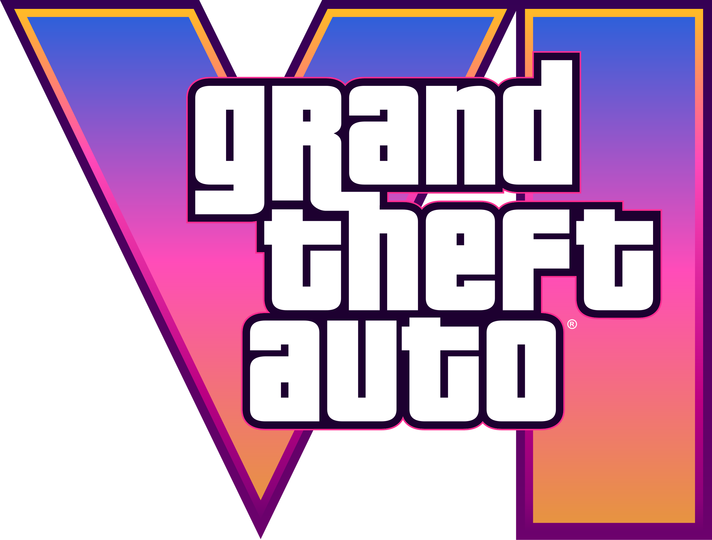

GTA VI: Nova Era, Novos Personagens
GTA VI traz uma Vice City moderna e vibrante, com a dupla Lucia e Jason no papel principal. Inspirados no estilo “Bonnie e Clyde”, eles vivem assaltos ousados, fugas eletrizantes e escolhas que mudam o rumo da trama. Com gráficos de ponta e jogabilidade refinada, o jogo promete redefinir o mundo aberto e elevar o patamar da franquia.
ASSISTA O TRAILER